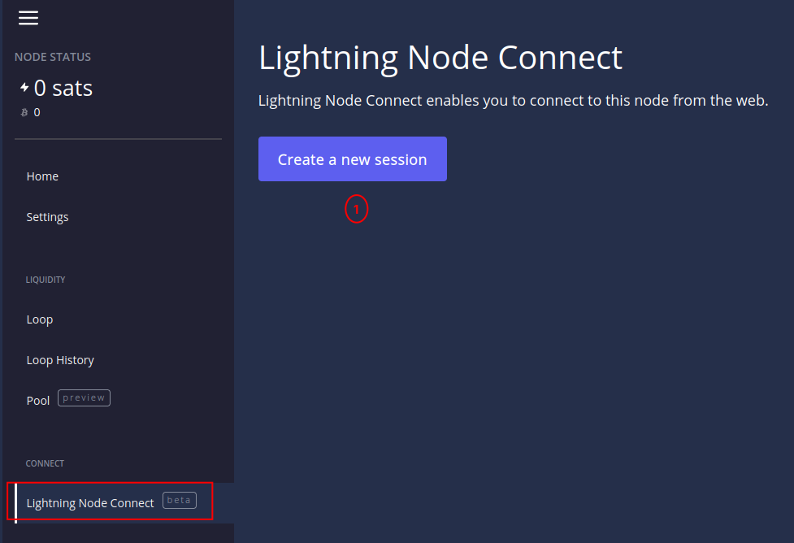
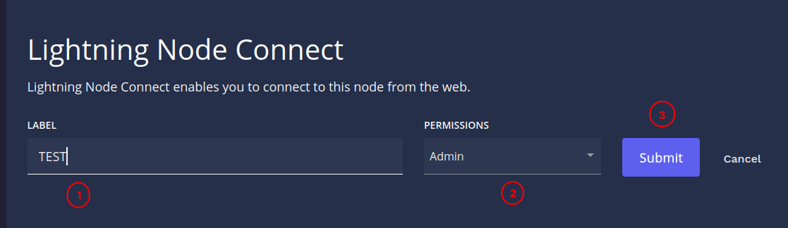
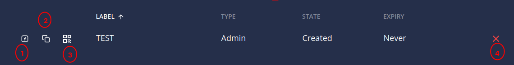

Gestiona tu nodo con Lightning Terminal (LIT)
Lightning Terminal es una interfaz gráfica y herramienta de gestión para la red Lightning Network de Bitcoin. Desarrollada por Lightning Labs, permite a los nodos operar canales de pago de forma más eficiente mediante funciones avanzadas como pool (mercado de liquidez), loop (intercambio on/off-chain) y faraday (análisis de riesgos). Facilita la compra y venta de liquidez entrante, la gestión de canales y la obtención de recomendaciones para mejorar la rentabilidad del nodo. Es ideal para usuarios que desean participar activamente en Lightning sin manejar comandos complejos en terminal.
Ahora bien conociendo que es LIT accedemos a la web https://lit.cashu4community.xyz

Aquí accederemos con la contraseña que creamos en la sección Primeros Pasos
lit.conf, exactamente en parámetro de configuración uipassword ubicado en app-data/lit/
Página de Inicio
Lo primero que veremos es la pagina de inicio, que nos muestra vario opciones para conectarnos directo al nodo y enlace al canal de YouTube.

Página de Ajustes (Settings)
En los ajustes podemos realizar varias acciones:

- Cambiar la unidad de Bitcoin (Satoshis, Bits y Bitcoin)
- Selecciona modo en que van a funcionar los canales (Optimizados para recibir, enviar o enrutar)
- Cambiar los exploradores (mempool.space para bitcoin onchain y terminal.lightning.engineering para lightning)
- Muestra la clave pública del nodo
- Alias
- Muestra el UrI del nodo
Loop
Loop es un servicio no custodial ofrecido por Lightning Labs que actúa como un puente bidireccional (on/off-ramp) entre la red Lightning y la blockchain de Bitcoin. Su función principal es permitir a los usuarios mover fondos de un lado a otro sin necesidad de abrir o cerrar canales, resolviendo así los problemas de liquidez en la red.
Las dos operaciones principales son:
- Loop Out: Convierte fondos de la red Lightning (off-chain) a Bitcoin en la cadena principal (on-chain). Es útil para comerciantes que reciben muchos pagos y necesitan enviar esos fondos a una wallet fría o un exchange, liberando capacidad para seguir recibiendo.
- Loop In: Convierte Bitcoin de la cadena principal a la red Lightning. Sirve para "recargar" un canal de Lightning que se ha quedado sin fondos después de hacer muchos pagos.
Pueden ver Lightning Loop en acción ver vídeo en YouTube
Lightning Node Connect
La función Lightning Node Connect (LNC) en Lightning Terminal es un mecanismo que te permite conectarte a tu nodo Lightning de forma remota, segura y privada a través de un navegador web o una aplicación móvil, sin necesidad de configurar redirección de puertos o usar Tor.
Piensa en ello como un "acceso remoto" diseñado específicamente para nodos Lightning, que soluciona problemas de conectividad como el NAT (traducción de direcciones de red) o los firewalls que suelen bloquear las conexiones entrantes.
¿Qué es y para qué sirve exactamente?
- Conexión Sencilla: Te permite acceder a tu nodo desde la interfaz web de Lightning Terminal (terminal.lightning.engineering) o desde billeteras móviles como ZEUS, sin configurar direcciones IP o certificados complicados.
- Alta Seguridad: La conexión es cifrada de extremo a extremo utilizando un método llamado PAKE (intercambio de claves autenticado por contraseña). Esto significa que ni el servidor proxy de Lightning Labs ni ningún intermediario pueden ver tu información privada (como saldos o canales); solo ven datos cifrados.
- Gestión Remota: Es la tecnología que hace posible que puedas usar las herramientas de Liquidez de Lightning Terminal (Loop, Pool, Faraday) sin estar en la misma red local que tu nodo.
¿Cómo funciona?
En lugar de que tu navegador se conecte directamente (lo cual es difícil si el nodo está en tu casa detrás de un router), el nodo inicia una conexión saliente hacia un proxy. Tu navegador se conecta al mismo proxy, y LNC une ambos extremos de forma segura.
Ahora ya tenemos una idea de como funciona Lightning Node Connect vamos a crear una conexión.

- Crea una nueva conexión para el servicio Lightning Node Connect (LNC)

- Definimos el nombre de la conexión. Ej TEST
- Definimos los permisos de la conexión (Admin, Solo Lectura o Customizado)
- Añadimos la conexión

- Redirecciona al servicio Lightning Terminal Services incluyendo la frase de 12 palabras
- Copia la frase de 12 palabras
- Muestra un QR con los datos de conexión, sirve para emparejarnos con la aplicación Zeus
- Elimina la conexión

La imagen anterior muestra la pantalla del servicio LNC al cual se puede acceder desde el paso anterior. Al hacer clic en el boton connect no lleva a una pagina donde definimos una contraseña.

Luego confirmamos el password.

Confirmado el password se carga el dashboard del nodo.

- Desde aquí se puede acceder al explorador Lightning útil si se quiere buscar nodos con buena reputación, la función autopilot nos permite automatizar tareas como cambio de fees según el estado de los canales, Loop lo vimos anteriormente desde aqui podemos realizar el rebalanceo de canales mediante esta función y Assets esta relacionado con la emision de activos sobre lightning algo que aun esta en desarrollo.
- Aqui podremos envia y recibir tanto On - chain y Lightning, además de poder abrir canales.
- Se muestra información estadistica del funcionamiento del nodo, las ganacias por enrutamiento estado de lconocer os canales, entre otros datos.
- En este menu podemos ver la liquides de que dispone, versión del nodo, historial, entre otras informaciones.